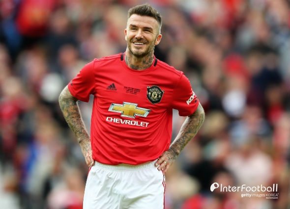
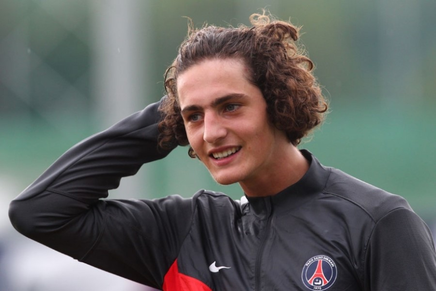
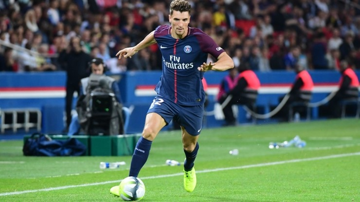
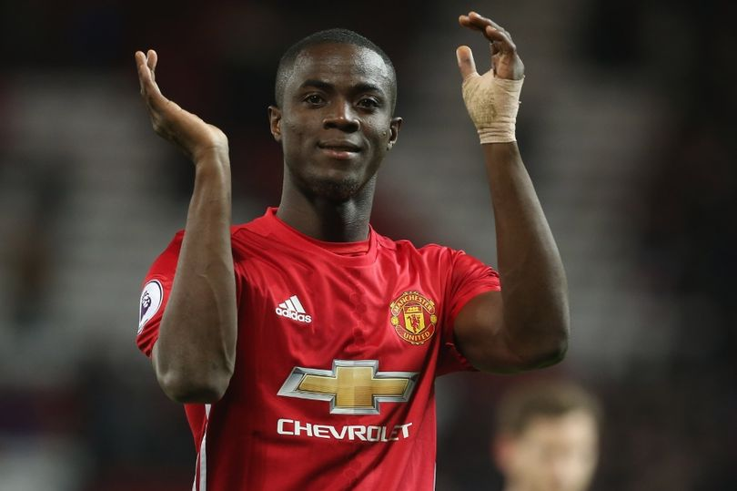

Team.News

'현역보다 나은 베컴 영입해!'...
맨유 향한 뼈있는 농담.
자선경기에 출전한 데이비드 베컴(44)이 녹슬지 않은 기량을 과시하자 맨체스터 유나이티드 팬들과 축구 전문가들이 뼈있는 농담을 던졌다. 특유의 크로스 능력을 보여준 베컴과...(더보기)

맨체스터 유나이티드 FA미드필더
라비오에 주급 2억5천 제안.
맨유가 자유계약 선수인 라비오에게 주급 17만파운드(약 2억 5천만원)의 계약을 제안했다고 보도됬다 또한 맨유는 500만유로(약66억)의 계약금을 제시했다고전해지는데...(더보기)

'어릴 적부터 팬'
아스널 보다 맨유 이적 원한다.
토마스 뫼니에가 올 여름 맨체스터 유나이티드(맨유) 이적을 원하고 있다. 뫼니에는 '여러 빅클럽에서 러브콜을 받고있다. 개인적으로는 아스널 보다 맨유 이적을 선호한다.'라고 말하였다...(더보기)

에릭 바이, 부상은 피할수 없는 상황.
다음시즌 더욱 강해져서 돌아오겠다.
월요일 확정된 소식으로 에릭 바이는 오른쪽 무릎 인대 부상으로 확인되며 남은 리그경기,아프리카 컵 경기가 어려워보인다 그런상황에서 그는 인스타그램에 글을 남겼는데...(더보기)